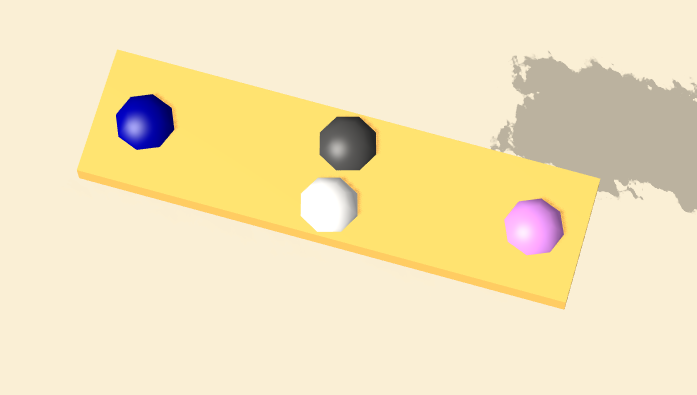

Abstract
The floating magnet Sandbox is an interactive simulator with added features of magnets,
buoyancy, and drag. I extended upon ammo.js physics engine which is c++ version of bullet physics.
I used three.js and webGL for rendering.
The main goal of this project was creating an interactive
environment. The user can use mouse and keyboard interaction to move and create object, change parameters,
and change camera perspective and zoom. Physical forces in the simulator such as magnetic forces and
drag are calculated using heuristical methods since physically accurate calculations are complicated and
hard to generalize to different mesh objects.
Approach
My approach for physics was to add additional external forces to ammo.js physics world.
I applied all the forces other than gravity through setVelocity function to the ammo.js
physics world, which then checks for collisions and sets correct velocity and rotation upon
collision.
In three.js programs that use ammo.js for physics engine, all objects exists
both in the scene space of three.js and physics world of ammo.js. At each time step, three.js
objects are updated using the information from the motion state given by the physics world.
To implement forces not supported by the ammo.js, I calculated the external forces from the
information of the three.js objects and applied acceleration to each of the physics world objects
at each time step.
Since modeling magnetic field is very challenging, I implemented simple inverse square law for the repulsion and attraction force between magnets.
Objects can be positively charged, negatively charged, metallic, or none.
In the image below you can see 4 spheres attached to the magnet bar. Pink and Blue spheres apply magnetic force to the bar while black and white spheres slow down the spinning of the bar.
Source: Socratic.org
Buoyancy is calculated based on density, gravity, and ratio of volume under water I approximated volume under water using the bounding sphere of the object and sphere cap volume formula below For drag I used nasa’s drag equation which approximates the drag using squared velocity and area. I omitted the area term since bounding sphere volume turned out to be too inaccurate for drag.
|
|

|
Source: Wikipedia
Implementing External Forces
General Pipeline
1. Create objects both in three.js and ammo.js. Add them to the physical world of ammo.js, and rigid bodies array.
2. At each all of render frame, update the magnetic forces. Attraction between opposite charges,
repulsion between same chages, attraction of the metallic object is calculated.
3. At the same time, buoyancy and drag is calculated. Buoyancy takes current water level, object
density and bounding volume into account. Drag is calculated from current velocity.
4. All of the external forces to each rigid body is applied as acceleration to the objects in the
ammo.js physics world.
5. Ammo.js physics world steps forward with updated velocity changing object locations and applying
the effect of colisions.
6. Objects in three.js scene is updated according to the information from physics world.
Challenges and Solutions
Dissipating Energy
Since the ammo.js default world does not support air resistance, and objects floating in my simulation is technically in the air in terms of physical world, they do not stop once force is applied to them. With the implementation of drag, their velocity slows down, but their rotations do not. I used the constraint feature of ammo.js to dissipate energy by turning objects rotation into velocity of its set objects. In the picture below, black and white spheres help slow down the rotation of the magnet bar (yellow)
|

|
Linking sphere balls to a magnet bar also allowed me to put opposite charges on the magnet bar. In the picture, blue ball has negative charge and the pink ball has positive charge.
Interactivity
Camera Control
User can mouse drag on the screen to change perspective. This is implemented with javascript event listeners, spherical coordinates, and three.js camera lookat function which made it easy to point the camera to the center.
Selecting Object
By casting a ray with three.js raycastor, I can obtain the object that the user clicked on. three.js allows the generation of the ray in the camera direction, so I only need to modify starting position and get the first intersection. User can then move the object with arrow keys.
Changing Parameters
User can use keyboard inputs to change different constants like density multiplier, buoyancy constant, and drag constant. Current constant is displayed on the top of the screen
|
|
Results
|
|
|
|
|
User can move red ball |
|
|
|
References
Three.js
Ammo.js
https://wright.nasa.gov/airplane/drageq.html
https://threejs.org/examples/webgl_water.html
Bullet User Manual
https://medium.com/@bluemagnificent/intro-to-javascript-3d-physics-using-ammo-js-and-three-js-dd48df81f591
Contributions
Jin Seok Won
Came up with the idea
Wrote the proposal
Wrote milestone
Implemented the physics pipeline
Created UI
Made the magnet bar object
Made final report
Presented